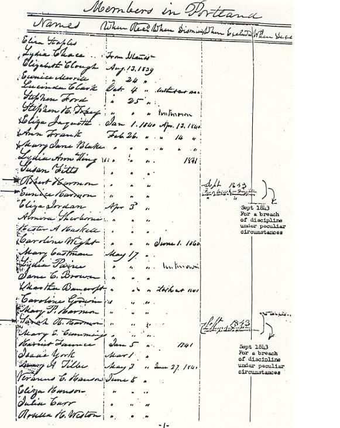
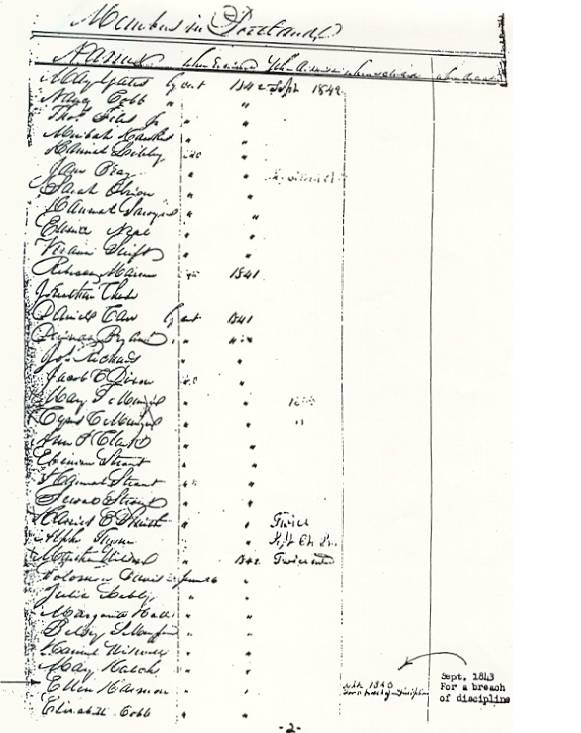
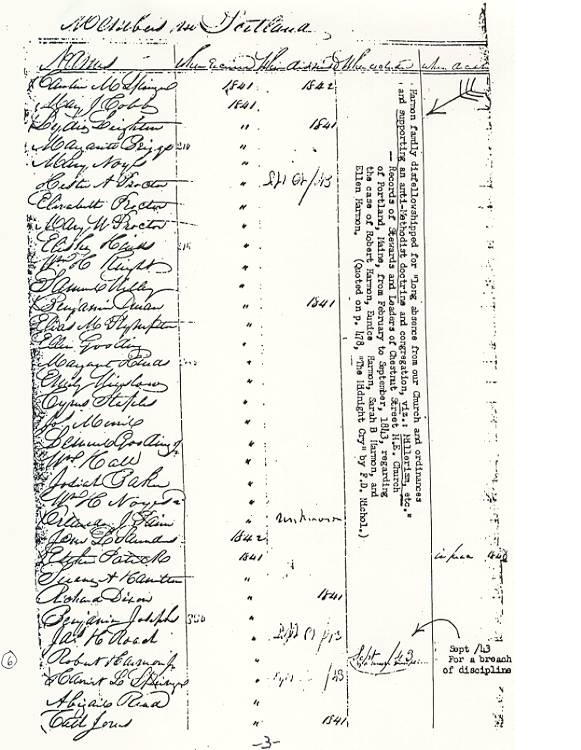
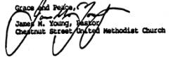

Letter regarding Harmon family from Chestnut Street United Methodist Church
The official disfellowship records of the Harmon Family. The letter and church records below were sent to us by Mr. Keith Moxon from Australia.
Chestnut Street United Methodist Church
17 Chestnut Street • Portland, Maine 04101-4940 • (207) 772-6123
Mr. Keith Moxon
BO BO Valley, Via ULONG
NSW 2450, Australia
Greetings from Portland, Maine. Chestnut street church is still very much alive; one of the oldest congregations in the United Methodist Church, founded in 1795 when George Washington was President. I have responded to a series of inquiries from Australia this year, and find your letter one of the more interesting, since you raise a theological question. As you can see from the enclosed photocopies of the original church records all the members of the Harmon family were dismissed in September, 1843 from Chestnut Street Church on the grounds of breach of discipline. You will note too that Robert, Sr., Eunice and Sarah include the phrase under, peculiar circumstances.
The reason for their dismissal was not that they preached the second coming of the Lord Jesus Christ. That is a tenant of our orthodox faith which is confirmed from the Articles of Religion 1784.
Their dismissal was occasioned by their breach of discipline in proclaiming the views of William Miller's time setting. I read these entries to mean that after much quiet counsel to refrain from their disruptive behavior in church meetings the members of Chestnut Street Church took what they believed to be their only recourse, to dismiss the Harmon Family.
I am unacquainted with Mr. F. D. Nichol's book The Midnight Cry, and do not know if he quoted what you have in front of you or not. These pages have been photocopied by the leadership of the Seventh-Day Adventist Church, and are on file in Washington, DC. One more note, as the records state, Robert Sr., and Eunice joined Chestnut Street Church in February 1840. Sarah joined the church on May 17, 1940. (typo 1840) Robert Jr. joined in 1841, and Ellen joined June 26, 1842.
It is my hope you will find this information helpful. Since I complete my term of ministry at Chestnut Street Church this month, any future correspondence you may wish to share will be with The Reverend Drs. Richard and Nancy Devor at the same address.
Scans of original church records
Below are three pages from the Chestnut Street Methodist Church that is handwritten showing the church records of the Harmon Family dismissal.

Page 1: By Robert and Eunice Harmon's name: "Sept. 1843 For a breach of discipline under peculiar circumstances." Note the above letter, as the Methodist Pastor makes reference to Robert and Eunice.

Page 2: By Ellen Harmon's name, "Sept. 1843 For a breach of discipline."

Page 3: The typed material: "Harmon family disfellowshipped for "long absence from our Church and ordinances and supporting an anti-Methodist doctrine and congregation, viz.: Millerism, etc."—Records of Stewards and Leaders of Chestnut Street M.E. Church of Portland, Maine, from February to September, 1843, regarding the case of Robert Harmon, Eunice Harmon, Sarah Harmon, and Ellen Harmon. (Quoted on p. 478, "The Midnight Cry" by F. D. Nichol.)
Note concerning EGW's twin sister:Elizabeth Harmon Bangs, Ellen G. White's twin sister did not fall into the Millerite trap or for her sisters visions and remained a member of the Methodist Church till she died, December 21,1891.
Sections
Robert K. Sanders, Founder and Editor of Truth or Fables, 1997–2012
Life Assurance Ministries assumed ownership of Truth or Fables in 2012
© 2016 Life Assurance Ministries. All rights reserved.
